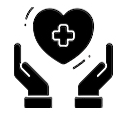
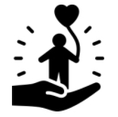
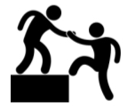
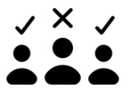

Advancing MIPA through training, certification, leadership development, and advocacy.
Positive Change Movement advances the Meaningful Involvement of People Living with HIV/AIDS by building the leadership, workforce, and certification pathway needed for PLHIV to lead HIV systems from the center instead of being consulted from the margins.
Our work shifts power from gatekeeping structures into PLHIV-led decision-making, paid leadership, community accountability, and statewide Community Health Worker infrastructure.

Training people living with HIV as trusted Community Health Workers, peer navigators, educators, and systems-change leaders.
Building a CHW certification pathway that recognizes lived experience as public health expertise and creates paid advancement.
Moving MIPA beyond token seats and into real authority over governance, program design, evaluation, and policy priorities.

Preparing PLHIV to become trainers, supervisors, advisory leaders, board members, policy advocates, and public health partners.

Replacing gatekeeping with PLHIV-led standards, paid participation, accountability, and structures rooted in community trust.

Fighting stigma, HIV criminalization, retaliation, racism, homophobia, transphobia, and systems that keep PLHIV out of power.
We believe HIV programs should not be controlled by people who speak for us while keeping us out of power. Positive Change Movement builds the training, certification, and leadership pipeline needed to move PLHIV into the roles where decisions are made, resources are directed, and accountability is enforced.